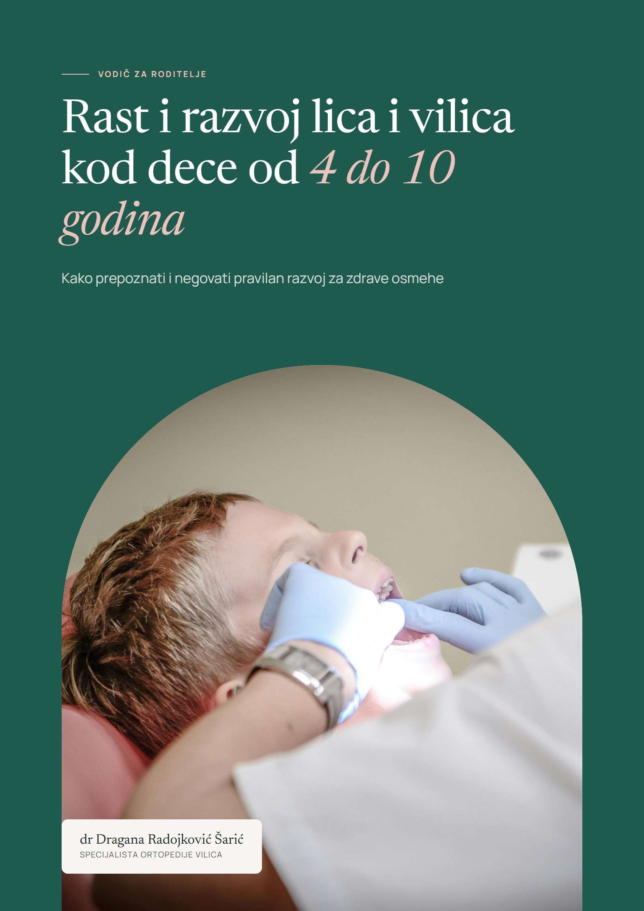

Edukativna biblioteka
Razvoj deteta, objašnjen jasno.
Kratki, razumljivi tekstovi o disanju, navikama, zubima i vilicama. Da znate na šta da obratite pažnju i kada je vreme za stručnu procenu.
Disanje na usta kod dece: kada je potrebno obratiti pažnju?
Šta je uobičajeno, šta može biti znak za proveru i kome se obratiti.
Zašto su oralne navike važne?
Prst, cucla i način gutanja: šta je deo detinjstva, a šta vredi pratiti.
Šta znači kada dete rano izgubi mlečni zub?
Zašto mlečni zubi čuvaju prostor za stalne i kada je procena korisna.
Kada zubi izgledaju uredno, a ispod može postojati nešto važno
Zašto neke pojave u razvoju vilica lakše uoči stručnjak nego roditelj.
Zašto pravilan položaj zuba nije samo estetsko pitanje?
Šta sve ortodontska procena posmatra osim izgleda osmeha.
Šta roditelji treba da znaju o funkcionalnoj ortodontskoj terapiji?
Čemu je usmerena, kada se razmatra i zašto zahteva individualnu procenu.
Kako roditelji mogu da podrže zdrav razvoj deteta?
Šta možete da pratite kod kuće i kada je vreme za razgovor sa stručnjakom.
Tekstovi imaju edukativnu svrhu i ne zamenjuju pregled. Ako vas nešto brine kod vašeg deteta, obratite se stručnjaku.

Besplatan vodič